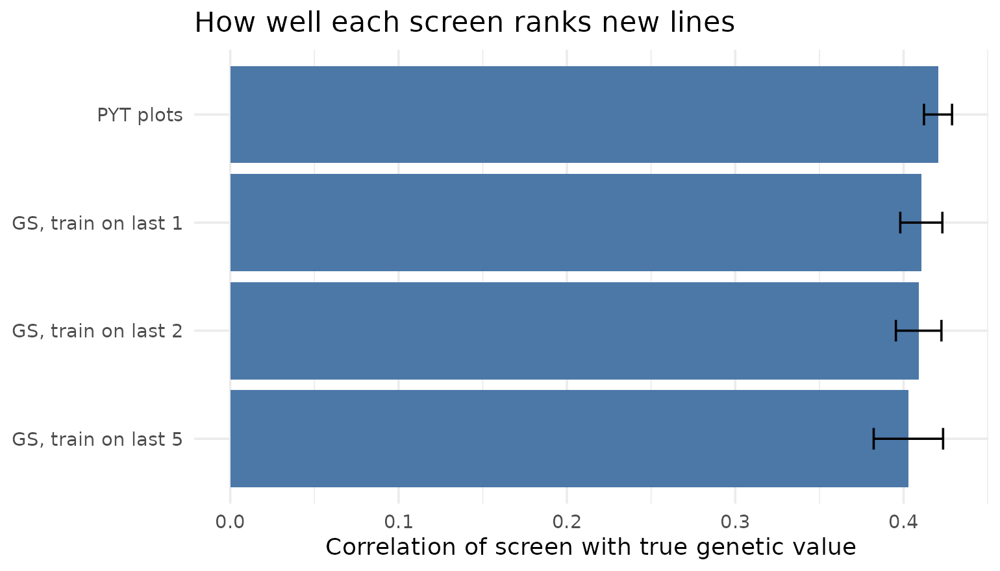
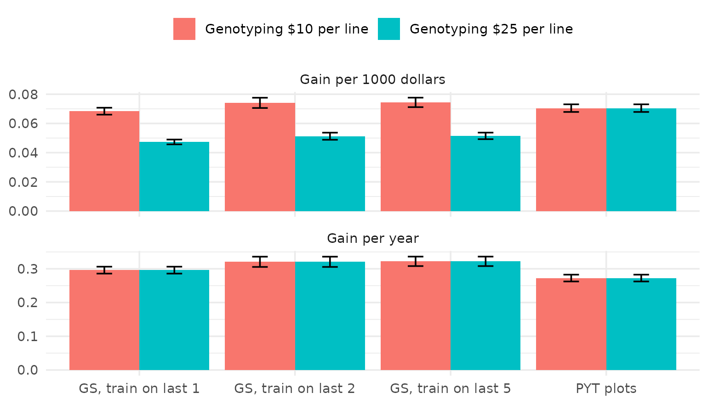

Genomic or phenotypic selection?
Source:vignettes/articles/genomic-selection.Rmd
genomic-selection.RmdGenomic selection (GS) predicts each line’s value from its markers, using a model trained on lines that were genotyped and phenotyped. In a line pipeline it can replace the preliminary yield trial (PYT): genotype every new line, predict, and send the best predictions straight to the advanced trial. That trades plot costs for genotyping costs, and a measured phenotype for a prediction. Whether it pays depends on the price of genotyping and on how accurate the predictions are, and accuracy depends on how much training data you have.
This article builds both pipelines in AlphaSimR with
alphasim_program(), so it also shows how to write a scheme
of your own that line_pipeline() does not cover.
Founders with a SNP chip
asr_founders() takes a setup function for
anything beyond the default trait. Here we add a SNP chip of 50 markers
per chromosome:
founders <- asr_founders(
n_founders = 60, n_chr = 10, seg_sites = 150,
setup = function(SP) {
SP$addTraitA(nQtlPerChr = 15)
SP$setVarE(h2 = 0.3)
SP$addSnpChip(nSnpPerChr = 50)
}
)One program, two strategies
The program follows line_pipeline(): cross, advance by
single-seed descent, screen, advanced yield trial (AYT), release and
recycle. The only difference is the screen. With
strategy = "phenotypic" every line gets one PYT plot, which
takes a field season. With "genomic" every line is
genotyped and ranked by an RR-BLUP model trained on all AYT lines so far
(the founders’ phenotypes in the first cycle). Genotyping and prediction
fit in the off-season, so the genomic pipeline skips the PYT year: 3.5
years per cycle instead of 4.5. train_cycles limits the
training set to the most recent cycles.
program <- function(founders, SP, strategy, train_cycles, genotype_cost,
n_crosses = 30, per_cross = 15, n_ayt = 60, n_parents = 15, cycles = 4) {
tracker <- asr_tracker(founders)
plot_cost <- 15
parents <- founders
training <- list(setPheno(founders, reps = 8)) # founders evaluated like an AYT
accuracy <- numeric()
for (cycle in seq_len(cycles)) {
lines <- self(randCross(parents, nCrosses = n_crosses), nProgeny = per_cross)
for (g in 1:3) lines <- self(lines)
if (strategy == "phenotypic") {
lines <- setPheno(lines) # one PYT plot per line
screen_cost <- nInd(lines) * plot_cost
score <- pheno(lines)
} else {
train <- do.call(c, tail(training, train_cycles))
model <- RRBLUP(train)
lines <- setEBV(lines, model)
screen_cost <- nInd(lines) * genotype_cost
score <- ebv(lines)
}
accuracy <- c(accuracy, cor(score, gv(lines)))
ayt <- setPheno(selectInd(lines, n_ayt, use = if (strategy == "phenotypic") "pheno" else "ebv"),
reps = 8) # 4 locations x 2 reps
training <- c(training, list(ayt))
parents <- selectInd(ayt, n_parents)
released <- selectInd(ayt, 5)
cost <- n_crosses * 25 + nInd(lines) * 3 * 2 + screen_cost + n_ayt * 8 * plot_cost
# 2.5 years of nursery, then the PYT year (skipped by GS: genotyping fits in the off-season), then the AYT
years_per_cycle <- if (strategy == "phenotypic") 4.5 else 3.5
tracker$record(parents, year = cycle * years_per_cycle, cost = cost, released_lines = released)
}
asr_summary(tracker, accuracy = mean(accuracy))
}tracker$record() stores each cycle’s parents, cost and
releases, and asr_summary() turns the record into the
standard breeding metrics. Now make it a spec, with the strategy and the
training window as the choices and the genotyping price as an
assumption:
spec <- alphasim_program(program, strategy = tune(), train_cycles = tune(), genotype_cost = 20,
founders = founders)
designs <- rbind(
data.frame(strategy = "phenotypic", train_cycles = 1),
data.frame(strategy = "genomic", train_cycles = c(1, 2, 5))
)
reps <- sim_replicates(10, seed = 1, scenarios = sim_scenarios(genotype_cost = c(10, 25)))
res <- tune_grid(spec, reps, grid = designs,
metrics = sim_metric_set(release_gain, gain_per_year, accuracy, cost, gain_per_cost))train_cycles does nothing in the phenotypic pipeline, so
we run it once. For GS, 1, 2 and 5 mean training on the last one or two
batches of AYT data, or on everything collected (four cycles plus the
founders).
Accuracy, gain and cost
m <- collect_metrics(res, type = "wide")
m$design <- ifelse(m$strategy == "phenotypic", "PYT plots",
paste0("GS, train on last ", m$train_cycles))
m[m$.scenario == "genotype_cost=10", c("design", "accuracy", "release_gain", "release_gain_se", "gain_per_year")]
#> # A tibble: 4 × 5
#> design accuracy release_gain release_gain_se gain_per_year
#> <chr> <dbl> <dbl> <dbl> <dbl>
#> 1 PYT plots 0.420 4.91 0.182 0.273
#> 2 GS, train on last 1 0.411 4.14 0.144 0.296
#> 3 GS, train on last 2 0.409 4.49 0.213 0.321
#> 4 GS, train on last 5 0.403 4.51 0.197 0.322
acc <- m[m$.scenario == "genotype_cost=10", ]
ggplot(acc, aes(reorder(design, accuracy), accuracy)) +
geom_col(fill = "#4C78A8") +
geom_errorbar(aes(ymin = accuracy - accuracy_se, ymax = accuracy + accuracy_se), width = 0.2) +
coord_flip() +
labs(x = NULL, y = "Correlation of screen with true genetic value",
title = "How well each screen ranks new lines")
long <- rbind(
data.frame(m[, c("design", ".scenario")], measure = "Gain per year", value = m$gain_per_year,
se = m$gain_per_year_se),
data.frame(m[, c("design", ".scenario")], measure = "Gain per 1000 dollars", value = m$gain_per_cost,
se = m$gain_per_cost_se)
)
long$price <- paste0("Genotyping $", sub("genotype_cost=", "", long$.scenario), " per line")
ggplot(long, aes(design, value, fill = price)) +
geom_col(position = "dodge") +
geom_errorbar(aes(ymin = value - se, ymax = value + se), position = position_dodge(width = 0.9), width = 0.2) +
facet_wrap(~measure, scales = "free_y", ncol = 1) +
labs(x = NULL, y = NULL, fill = NULL) +
theme(legend.position = "top")
What the study shows for this program:
- Prediction is about as accurate as one PYT plot. With a single-plot heritability of 0.3, the RR-BLUP predictions rank new lines about as well as the PYT does, and the training window changes accuracy only a little.
- Per cycle, the PYT wins. Per year, GS wins. GS gives somewhat less gain per cycle, especially when trained on only the latest cycle. It saves a year every cycle, though, so its gain per year is higher once it trains on two or more cycles of data.
- The price of genotyping decides the money question. At 10 dollars a line, GS trained on enough data gives about as much gain per dollar as the PYT, or a little more. At 25 dollars a line it falls well behind. Somewhere between is the break-even price for this program. Rerun with your own costs to find yours.
- The comparison is paired. Both strategies start from the same founders on every seed, so differences between them are measured precisely even with ten replicates.
Make it yours
The program is ordinary AlphaSimR code, so everything about it can change:
- Use GS to shorten the cycle as well. Select at F3 from predictions and recycle parents before the AYT. This is where GS usually gains most, and it only means changing the year recorded per cycle.
- Mix the two: genotype everything, keep a smaller PYT, and select on an index of phenotype and prediction.
- Tune
n_ayt,per_crossor the marker density (nSnpPerChr) along with the strategy. - Use your own marker data for founders through
asr_founders(haplotypes = ).